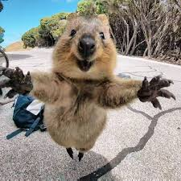
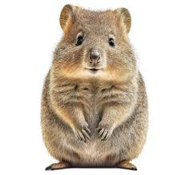
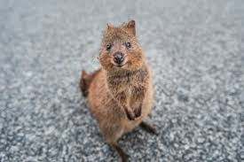
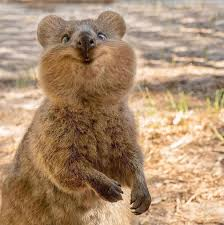

쿼카 (Quokka) 🦘
세상에서 가장 행복한 동물을 만나보세요!

쿼카란?
쿼카(Quokka)는 캥거루과에 속하는 작은 유대류 동물입니다. 학명은 Setonix brachyurus이며, 주로 호주 서부 해안과 로트네스트 섬에 서식합니다.
몸길이는 약 40-54cm, 꼬리 길이는 25-30cm 정도이며, 체중은 2.5-5kg 정도입니다. 갈색 회색빛 털을 가지고 있으며, 둥근 귀와 짧은 꼬리가 특징입니다.
왜 행복한 동물일까?
쿼카는 입꼬리가 자연스럽게 올라가 있어 항상 미소 짓는 것처럼 보입니다. 이러한 표정 때문에 "세상에서 가장 행복한 동물"이라는 별명을 얻었습니다.
사람을 두려워하지 않는 친화적인 성격으로 관광객들과 셀피를 찍는 것으로도 유명합니다. SNS에서 #quokkaselfie 해시태그로 많은 사진을 찾아볼 수 있습니다!
서식지와 생활
- 주 서식지: 호주 서부, 로트네스트 섬
- 활동 시간: 주로 야행성
- 먹이: 풀, 나뭇잎, 과일 등 초식성
- 수명: 야생에서 약 10년
- 번식: 연 1회, 임신 기간 약 27일
보호 현황
쿼카는 IUCN 적색 목록에서 "취약종(Vulnerable)"으로 분류되어 있습니다. 서식지 파괴와 외래종 포식자 때문에 개체수가 감소하고 있습니다.
알고 계셨나요?
쿼카를 만지거나 먹이를 주는 것은 호주 법으로 금지되어 있으며, 위반 시 높은 벌금이 부과됩니다!
재미있는 사실들
- 쿼카는 물을 거의 마시지 않고 음식에서 수분을 섭취합니다
- 위험을 느끼면 새끼를 주머니에서 떨어뜨리고 도망갑니다
- 나무를 타는 능력이 뛰어납니다
- 집단으로 생활하며 최대 150마리까지 무리를 이룹니다
- 2013년부터 SNS 스타로 급부상했습니다
쿼카 만나기
쿼카를 직접 보고 싶다면 호주 퍼스에서 페리로 약 90분 거리에 있는 로트네스트 섬을 방문하세요!
섬에는 약 10,000마리의 쿼카가 서식하고 있으며, 자전거를 타고 섬을 둘러보며 쿼카를 만날 수 있습니다.
쿼카 갤러리



